Read, write and automate any NFC tag.
Tagger shows everything about a tag the moment you hold it to your phone: the chip, its ID, how much space is left, whether it is locked or password protected, and whether the chip is a genuine NXP part. Links are checked for scams before anything opens.
Write links, Wi-Fi, contacts, places, events and more, protect tags with passwords or a passphrase only Tagger can read, and make tags that run tasks on your phone. Every pro tool is free, and everything Tagger keeps is encrypted on your phone.
Tagger can copy, lock, password-protect and emulate tags. What the law says
- Version 1.0.0
- Android 10 or later
- 3.9 MB
Free, with nothing to unlock. No adverts, no account with the developer, no tracking. Compare or read the release notes.
Chrome may say the file might be harmful. It shows this for app files that do not come from Google Play. Choose Download anyway.
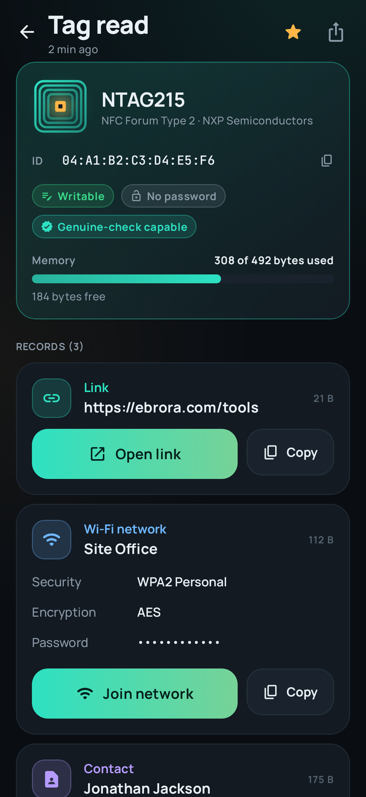
- Every tool freeNothing to buy and nothing locked.
- No advertsNone in the app and none on this site.
- EncryptedHistory, saved tags and tasks are encrypted on your phone.
- No accountNothing to sign up for.
A look inside
These are the real screens, drawn from the app's own code with made-up tags. Swipe or scroll sideways to see them all.
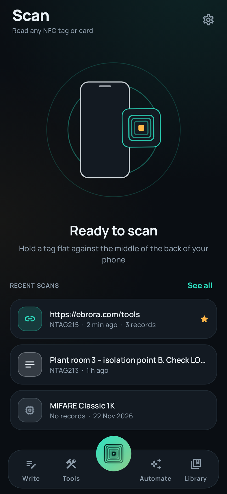
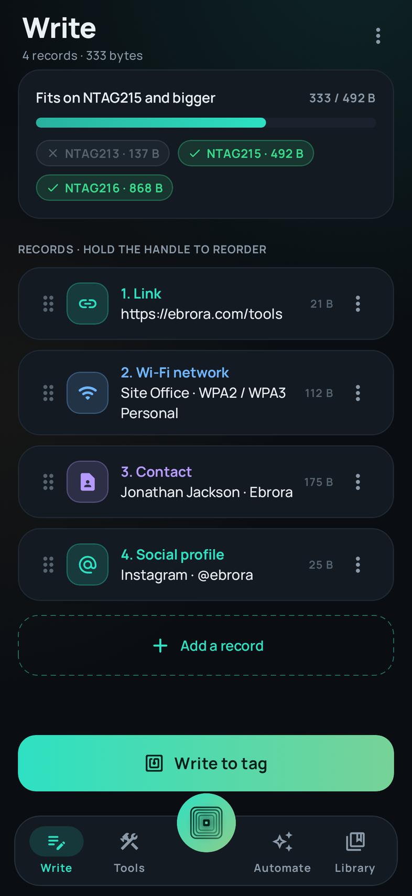
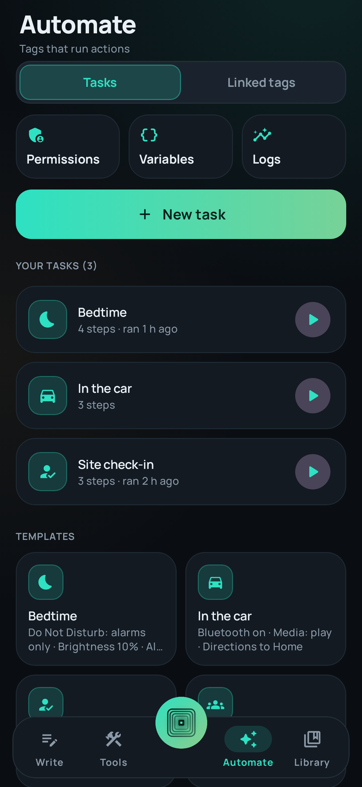
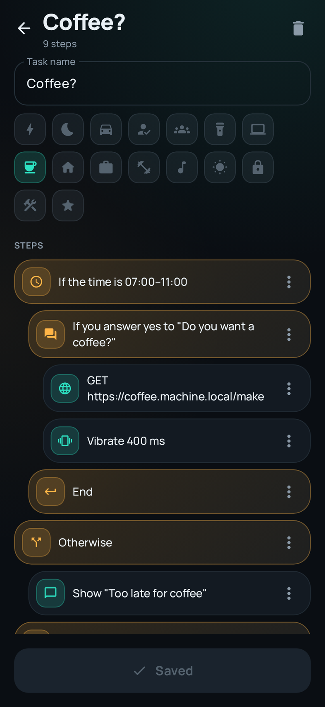
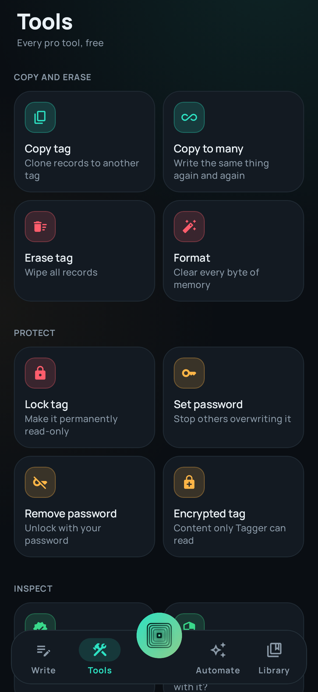
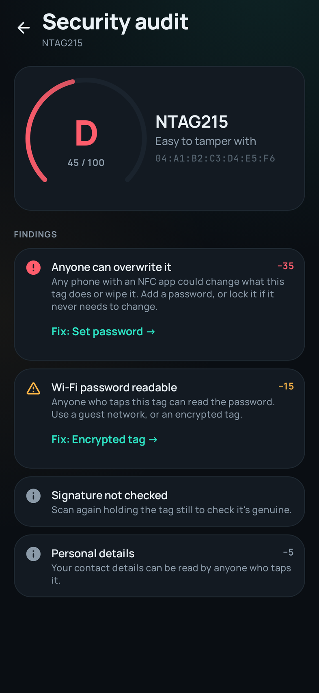
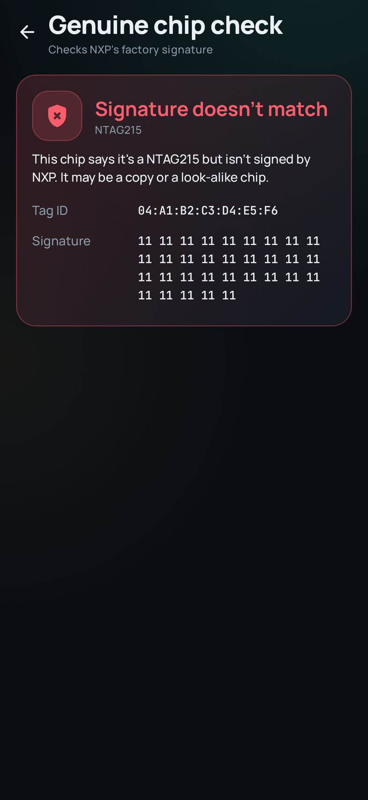
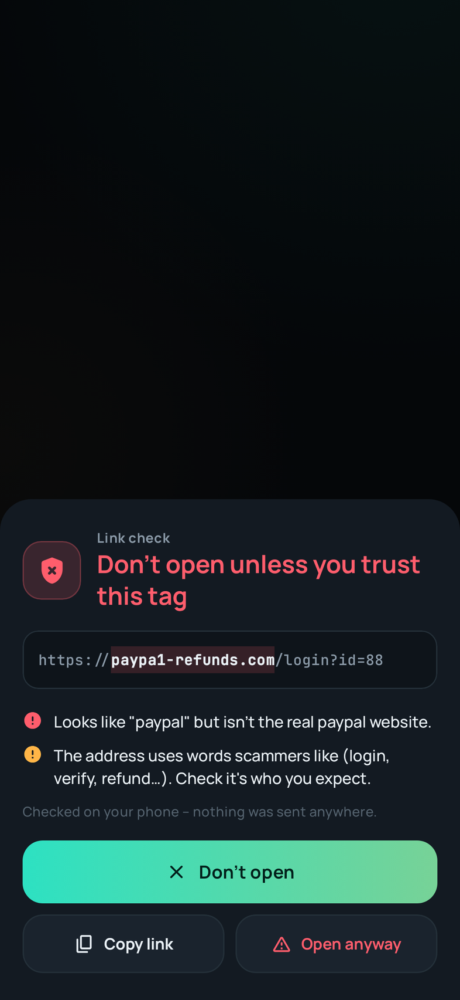
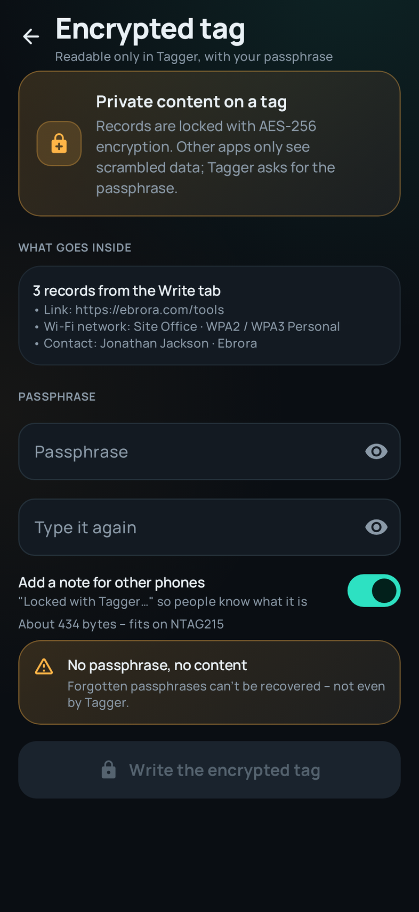
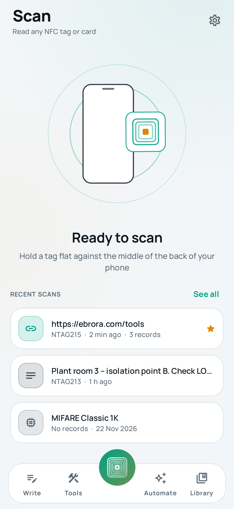
How it works
Tagger talks to tags through your phone's own NFC reader. Everything it works out happens on your phone.
Hold a tag
Hold any tag or card flat against the middle of the back of your phone. Tagger shows what it is and what is on it.
Write or protect it
Build what you want on the Write tab, or use the Tools tab to copy, lock, password-protect or encrypt it.
Make it do things
On the Automate tab, build a task and write it to a tag or link it to one. Tap the tag and your phone does the rest.
Everything is in, and all of it is free
Nothing below is held back for a paid tier, because there is no paid tier.
Read
- Everything about the chip
- Maker, type, ID, technologies, memory used and free, and whether it is locked or password protected.
- Genuine chip check
- NXP's factory signature checked on the phone for NTAG21x and Ultralight EV1 chips.
- Link safety
- Look-alike addresses, scam words and hidden redirects flagged before anything opens.
- Encrypted history
- Scans kept 30 days by default, or as long as you choose, encrypted on the phone.
Write
- 16 record types
- Links, text, Wi-Fi, contacts, phone, SMS, email, places, events, apps, Bluetooth, social profiles and more.
- Checked before and after
- Tagger shows which chips your records fit, then reads the tag back to prove it worked.
- Saved tags
- Keep what you write and write it again in a tap.
- Batch tagging
- Numbered tags for equipment, stock and assets, one tap per tag, with a spreadsheet log.
Protect and inspect
- Passwords and locks
- Set and remove tag passwords, or lock a tag permanently.
- Encrypted tags
- AES-256 with a passphrase. Only Tagger, with the passphrase, can read them.
- Security audit
- A grade for each tag and a fix for each weakness found.
- Memory and dumps
- A memory map, raw commands, full dumps and a side-by-side compare.
Automate
- 44 actions and conditions
- Sound, Do Not Disturb, brightness, torch, apps, links, alarms, timers, messages, web requests, Wake-on-LAN and more.
- If, otherwise and variables
- Run steps only at certain times, on certain days, on Wi-Fi, or after asking you.
- Signed task tags
- Your own tags run straight away. Anyone else's shows its steps first and asks.
- Without a tag
- Run tasks from a widget, a home-screen shortcut or a Quick Settings tile.
Private by design
Encrypted on the phone
History, saved tags, tasks and logs are encrypted with a key held in the phone's secure hardware.
Online only for your own steps
Tagger only goes online for web-request and Wake-on-LAN steps you build, and lists every one.
Nothing runs by surprise
A task tag you did not make shows its steps and asks before anything happens.
Use it within the law
Tagger is for your own tags and cards, and ones you have permission to work with. Copying, changing, locking or emulating a tag that belongs to someone else, or using a tag to trick people, can be a crime.
- Computer Misuse Act 1990. Reading protected data, or changing, locking or wiping a tag or card, without the owner's permission can be an offence under sections 1 and 3. Only work on tags and cards you own or have permission to use.
- Fraud Act 2006. Using a copied or emulated tag to pretend to be someone else, to get into a place or service, or to trick people into opening a link, can be fraud by false representation (section 2). Making or supplying something for use in fraud is an offence under sections 6 and 7.
Laws differ in other countries. If you are not in the UK, the rules where you are apply. Read the terms of use.
Installing and updating
Tagger is not on Google Play, so your phone asks a couple of extra questions the first time.
Download the app file
Tap Download on your phone. The file is called Tagger.apk and is about 3.9 MB. If Chrome says the file might be harmful, choose Download anyway. First tick the box to say you will use the app within the law.
Allow the install
Open the file. The first time, Android asks you to allow your browser to install apps. Allow it, go back and tap Install. If Google Play Protect steps in, choose More details, then Install anyway.
Updating later
Settings, About, Check for updates opens the release notes in your browser. Install the new file over the old one and your saved tags, tasks and history are kept.
Version 1.0.0, released 24 November 2026. See the release notes, or check your download.
Questions
Is Tagger really free?
Yes. There is no paid version, no subscription and no adverts, and every tool, including automation, is free.
Is it on Google Play?
No. Tagger is a personal project and is downloaded from this site as an Android app file. It needs Android 10 or later and a phone with NFC.
Which tags does it work with?
It reads any tag your phone can read. Writing works on all NDEF tags. Passwords, the memory map, dumps and formatting work on NTAG and Ultralight tags, the ones almost everyone uses.
Can it read my bank card?
Only the public details any reader can see, such as the card type. Bank, transport and ID cards are protected, and Tagger does not try to get round that.
Can it copy any card?
No. Tagger copies what is stored on a tag to another tag, but a chip's own ID cannot be copied, and it does not crack MIFARE Classic keys.
Do I need a second app to run tasks?
No. Reading, writing and automation are all in Tagger.
Why does it have internet access?
Only for web-request and Wake-on-LAN steps you build into your own tasks. Every request is listed in Automate, Logs, Network. Nothing else goes online.
What is power mode?
Android does not let apps switch Wi-Fi, Bluetooth, mobile data or flight mode by themselves, so Tagger opens Android's own switch for you. With the free Shizuku app, power mode switches them silently. It is optional.
Can I back up my tags and tasks?
Yes. Settings, Backup saves an encrypted file, protected with a password you choose, wherever you pick.
Does it work on an iPhone?
No. Tagger is for Android phones and tablets only.
Who made it?
Tagger is made by Jonathan Jackson, an independent developer in the United Kingdom.
Get more from every tag
Free, with no adverts and nothing to unlock. Made by the developer of several other free Android apps: see them all.